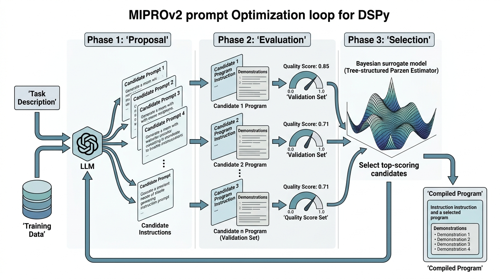

"I spent three weeks hand-tuning my prompt. Then a compiler found a better one in four minutes. I am not bitter. I am refactored."
A Prompt Engineer Who Became a Loss Function
Section 10.1 showed how to constrain what a model outputs. This section tackles a deeper question: how do you choose the instructions, demonstrations, and reasoning strategies that make the model produce good outputs? The traditional answer is prompt engineering: a human iterates on the prompt text until the results look right. DSPy replaces this manual process with a programming model where prompts are parameters, quality metrics are loss functions, and optimization is automated search. The result is a system where you write the program logic and the compiler writes the prompts.
1. The Prompt Engineering Bottleneck
Your API returns a perfectly formatted JSON object every single time: right keys, right types, right nesting. The answer is still wrong. Structural correctness, the guarantee that every response conforms to a schema, is not semantic correctness. A model can return a perfectly valid PaperMetadata object with the wrong title, incorrect year, or a methodology classification that does not match the paper's actual approach. The quality of the content depends on the prompt.
Prompt engineering, as practiced today, has three fundamental problems:
- It is manual. A human tries a prompt, inspects outputs, tweaks wording, and repeats. This does not scale to systems with dozens of large language model (LLM) calls, each needing its own instructions.
- It is brittle. A prompt tuned for GPT-4 may fail on Claude. A prompt tuned on 10 examples may degrade on a different distribution. Switching models means re-engineering every prompt.
- It is opaque. There is no systematic way to know whether a prompt is optimal, or even good. Two prompt engineers working on the same task will produce different prompts with different failure modes.
DSPy (Demonstrate-Search-Predict) addresses all three problems by treating prompt construction as a compilation step. You write the program; the compiler generates the prompts.
2. The DSPy Programming Model
DSPy introduces three core abstractions: signatures, modules, and optimizers (historically called teleprompters). Together, they separate what the program does from how the LLM is prompted to do it.
Signatures: Typed Input/Output Contracts
A DSPy signature specifies an LLM task's input and output fields, with types and descriptions, but says nothing about the prompt text, much like a function type signature in a statically typed language.
A signature is a Python class that inherits from dspy.Signature. It serves as a contract between your code and the language model, specifying which named fields go in and which come out, along with type annotations and descriptions for each. Signatures matter because they decouple the task definition from the prompting strategy; you can swap the underlying module (e.g., from Predict to ChainOfThought) or recompile for a different model without changing the signature at all. Mechanistically, the DSPy runtime reads the class's docstring and field metadata at compile time. It then assembles a prompt template whose structure depends on the wrapping module. Use a signature whenever your LLM call has clearly defined input and output fields; for free-form, conversational, or single-turn exploratory queries, a plain prompt string is simpler and sufficient. In short: Declare the contract, not the prompt; let optimization handle the rest.
import dspy
class ExtractClaims(dspy.Signature):
"""Extract scientific claims from a paper abstract,
identifying the methodology and confidence level for each."""
abstract: str = dspy.InputField(desc="Full text of the paper abstract")
title: str = dspy.InputField(desc="Title of the paper")
claims: list[str] = dspy.OutputField(
desc="List of distinct scientific claims made in the abstract"
)
methodology: str = dspy.OutputField(
desc="Primary research methodology: experimental, computational, "
"theoretical, review, or meta-analysis"
)
confidence: str = dspy.OutputField(
desc="Overall confidence assessment: high, medium, or low"
)The signature's docstring and field descriptions are the only natural language the programmer writes. Everything else (the actual prompt template, few-shot examples, chain-of-thought instructions) is generated by the optimizer.
A DSPy signature is the prompt-programming analog of a function type signature in Haskell or Rust. Just as a type signature like sort :: Ord a => [a] -> [a] constrains the implementation without specifying the algorithm, a DSPy signature constrains what the LLM must produce without specifying how to prompt it. The "implementation" (the actual prompt) is generated by the compiler, not written by the programmer.
Modules: Composable LLM Operations
A module wraps a signature with a specific prompting strategy. DSPy provides several built-in modules:
dspy.Predict: direct prediction, the simplest module. Generates a prompt from the signature and returns the output fields.dspy.ChainOfThought: adds areasoningfield before the output, implementing chain-of-thought prompting (see Section 4.2) automatically.dspy.ProgramOfThought: generates executable code to solve the task, then runs it.dspy.ReAct: interleaves reasoning with tool calls, implementing the ReAct pattern, where the model alternates between generating a thought, selecting an action (such as a search or API call), and observing the result before continuing.
import dspy
# Configure the language model
lm = dspy.LM("anthropic/claude-sonnet-4-20250514")
dspy.configure(lm=lm)
# Wrap the signature in a ChainOfThought module
extractor = dspy.ChainOfThought(ExtractClaims)
# Call it like a function
result = extractor(
abstract="We demonstrate that transformer-based models can predict "
"protein stability changes upon mutation with an RMSE of 0.8 kcal/mol, "
"outperforming physics-based methods by 30% on the ProTherm dataset.",
title="Deep Learning for Protein Stability Prediction"
)
print(result.claims)
# ['Transformer-based models predict protein stability changes ...',
# 'The model outperforms physics-based methods by 30% ...']
print(result.methodology)
# 'computational'
print(result.reasoning)
# 'The abstract describes a machine learning approach that ...'ExtractClaims in a ChainOfThought module, which automatically injects a reasoning step before the output fieldsModules are composable. You can build complex programs by chaining modules, just as you chain functions in regular Python:
class SummarizeClaims(dspy.Signature):
"""Synthesize a set of scientific claims into a coherent
summary paragraph, noting agreements and contradictions."""
claims: list[str] = dspy.InputField(
desc="Scientific claims from multiple papers"
)
research_question: str = dspy.InputField(
desc="The overarching research question"
)
summary: str = dspy.OutputField(
desc="Synthesis paragraph covering key findings"
)
contradictions: list[str] = dspy.OutputField(
desc="Any contradictions found between claims"
)
gaps: list[str] = dspy.OutputField(
desc="Knowledge gaps not addressed by the claims"
)
class LiteratureAnalyzer(dspy.Module):
"""A two-stage pipeline: extract claims, then synthesize."""
def __init__(self):
self.extract = dspy.ChainOfThought(ExtractClaims)
self.synthesize = dspy.ChainOfThought(SummarizeClaims)
def forward(self, abstracts: list[str], titles: list[str],
research_question: str):
# Stage 1: extract claims from each paper
all_claims = []
for abstract, title in zip(abstracts, titles):
result = self.extract(abstract=abstract, title=title)
all_claims.extend(result.claims)
# Stage 2: synthesize all claims
synthesis = self.synthesize(
claims=all_claims,
research_question=research_question
)
return synthesisLiteratureAnalyzer module composing ExtractClaims and SummarizeClaims via a forward method that pipes extracted claims into synthesis3. Prompt Optimization as Discrete Search
Teams that skip programmatic optimization routinely discover their hand-tuned prompts fail silently when models update, data distributions shift, or a pipeline grows from one LLM call to twenty. What follows is the mechanism that makes prompt quality reproducible rather than artisanal.
The central idea that separates DSPy from every other LLM framework: the prompt text is not fixed. It is a parameter that can be optimized.
To make this intuition precise, we can frame prompt selection as an optimization problem with a well-defined objective.
Formally, let \(\mathcal{P}\) be the space of all possible prompt programs (instructions plus few-shot demonstrations, where a demonstration is a complete input/output example included in the prompt to show the model what good behavior looks like), let \(\mathcal{D}\) be a dataset of input/output examples, and let \(M: \mathcal{P} \times \mathcal{X} \rightarrow \mathcal{Y}\) be the language model viewed as a function from prompts and inputs to outputs. A quality metric \(Q: \mathcal{Y} \times \mathcal{Y}^* \rightarrow [0, 1]\) scores how well the model's output matches the expected output. The optimization problem is:
$$ p^* = \arg\max_{p \in \mathcal{P}} \mathbb{E}_{(x, y^*) \sim \mathcal{D}} \left[ Q(M(p, x), y^*) \right] $$This is a discrete optimization problem because the search space \(\mathcal{P}\) consists of natural language strings and sets of demonstrations, not continuous parameters. You cannot compute gradients through prompt text. Instead, DSPy optimizers use combinatorial search strategies: bootstrap sampling, Bayesian optimization over a surrogate model (a cheaper approximation that estimates the quality of untried configurations without running them), or LLM-generated instruction proposals.
Checkpoint
So far: prompt selection is a formal optimization problem where the search space is discrete (instructions and demonstrations), the objective is a quality metric scored against labeled examples, and the search must proceed without gradients because the "parameters" are natural language strings.
Step-Through: BootstrapFewShot Demo Selection
Trace through one round of BootstrapFewShot with a tiny example. Suppose you have 5 training examples and max_bootstrapped_demos=2.
- Run example 1: the unoptimized program produces a prediction. The metric scores it 0.9. Mark as successful trace.
- Run example 2: prediction scores 0.3. Discard this trace.
- Run example 3: prediction scores 0.85. Mark as successful.
- Run example 4: prediction scores 0.1. Discard.
- Run example 5: prediction scores 0.7. Mark as successful.
- Select top-k: from the three successful traces (scores 0.9, 0.85, 0.7), pick the top 2 by metric score: examples 1 (0.9) and 3 (0.85).
- Inject: the compiled module's prompt now includes examples 1 and 3 as few-shot demonstrations, complete with their inputs, chain-of-thought reasoning (if using
ChainOfThought), and outputs.
The next round repeats this process using the already-bootstrapped module, so demonstrations improve iteratively. With max_rounds=2, the second pass often yields higher-quality traces because the model benefits from the demonstrations selected in round 1.
Mental Model
Think of prompt optimization like a cooking competition where you cannot taste the food yourself. You have a pantry of ingredients (candidate instructions, demonstration examples) and a panel of judges (your quality metric). You combine ingredients into a dish (a complete prompt), serve it to the judges, and receive a score. Because you cannot taste directly (no gradients through text), you must rely on the scores to guide your next attempt. BootstrapFewShot is like picking the best dishes from a potluck and putting them on the menu as examples. MIPROv2 is like hiring a sous chef (an LLM) to propose new recipes, running a blind tasting (evaluation), and keeping a notebook of which flavor combinations scored well (Bayesian surrogate) so the next round of proposals is more targeted. The key insight: you never write the recipe by hand; you define what "delicious" means (the metric) and let the search find the recipe.
Prompt optimization is to prompt engineering what compiler optimization is to hand-written assembly. The programmer specifies what the program should do (the signature and metric). The optimizer finds how to instruct the model (the prompt text and demonstrations). Just as you would not hand-write assembly for a production system, you should not hand-write prompts for a production LLM pipeline.
4. DSPy Optimizers
DSPy ships several optimizers, each suited to different scenarios. The three most important ones are:
BootstrapFewShot
The simplest optimizer. It runs the program on training examples, collects the successful input/output traces, and selects the best ones as few-shot demonstrations for each module. No instruction optimization; just demonstration selection.
import dspy
from dspy.evaluate import Evaluate
# Define a quality metric
def claim_quality(example, prediction, trace=None):
"""Score claim extraction quality.
Checks: (1) at least one claim extracted,
(2) methodology is valid, (3) claims are specific.
"""
if not prediction.claims:
return 0.0
valid_methods = {
"experimental", "computational", "theoretical",
"review", "meta-analysis"
}
method_score = 1.0 if prediction.methodology in valid_methods else 0.0
# Check that claims are specific (more than 10 words each)
specificity = sum(
1 for c in prediction.claims if len(c.split()) > 10
) / len(prediction.claims)
return (method_score + specificity) / 2.0
# Training data: list of dspy.Example objects
trainset = [
dspy.Example(
abstract="We develop a convolutional neural network that ...",
title="CNN for Retinal Disease Classification",
claims=["CNNs achieve 94% accuracy on retinal OCT images ..."],
methodology="computational",
confidence="high"
).with_inputs("abstract", "title"),
# ... more examples
]
# Create and run the optimizer
optimizer = dspy.BootstrapFewShot(
metric=claim_quality,
max_bootstrapped_demos=4, # up to 4 few-shot examples per module
max_labeled_demos=4,
max_rounds=2,
)
# Compile: optimize the program's prompts
analyzer = LiteratureAnalyzer()
compiled_analyzer = optimizer.compile(
analyzer,
trainset=trainset,
)LiteratureAnalyzer with BootstrapFewShot, which runs training examples, filters by metric score, and injects the top-scoring traces as few-shot demonstrationsMIPROv2
The most powerful optimizer in DSPy. MIPROv2 (Multi-prompt Instruction PRoposal Optimizer, version 2) jointly optimizes both instructions and demonstrations. It works in three phases: Figure 10.2.1 illustrates the MIPROv2 prompt optimization loop.

- Proposal: an LLM generates candidate instruction strings for each module, informed by the task description, the training data distribution, and previous evaluation results.
- Evaluation: each candidate program (instruction + demonstrations) is evaluated on a validation set using the quality metric.
- Selection: a Tree-structured Parzen Estimator (TPE), a Bayesian optimization algorithm that models the distribution of good and bad configurations separately and samples new candidates from the "good" distribution, selects the most promising candidates for the next round of proposals.
Figure 1 illustrates how these three phases connect in the MIPROv2 optimization loop.
optimizer = dspy.MIPROv2(
metric=claim_quality,
num_candidates=10, # generate 10 candidate instructions
init_temperature=1.2, # exploration temperature for proposals
max_bootstrapped_demos=4,
max_labeled_demos=4,
num_trials=30, # total evaluation budget
)
compiled_analyzer = optimizer.compile(
LiteratureAnalyzer(),
trainset=trainset,
valset=valset, # separate validation set
requires_permission_to_run=False,
)
# Inspect what the optimizer chose
for name, module in compiled_analyzer.named_predictors():
print(f"Module: {name}")
# The compiled module now has optimized instructions
# and selected demonstrations baked into its promptMIPROv2, which jointly optimizes instructions and demonstrations across 30 Bayesian-guided trials on a held-out validation setThe search space is combinatorial. With 10 candidate instructions per module and 4 possible demonstration sets, a two-module program has \(10^2 \times \binom{n}{4}^2\) possible configurations. MIPROv2's Bayesian surrogate makes this tractable by modeling how program configurations relate to quality scores. It focuses the evaluation budget on the most promising regions of the search space.
Choosing an Optimizer
The decision tree is straightforward:
- Few training examples (<20): use
BootstrapFewShot. It needs minimal data and is fast. - Moderate data (20-200 examples): use
MIPROv2. The Bayesian optimization pays off when there is enough data to estimate quality reliably. - Large data or complex programs: use
MIPROv2with a larger trial budget. Consider caching LLM calls to reduce cost. - Need to optimize for a specific model: recompile. The same DSPy program compiled for Claude will produce different prompts than when compiled for GPT-4, because the optimizer adapts to each model's strengths.
5. Quality Metrics: The Heart of Optimization
The quality metric is the most important design decision in a DSPy program. A poorly chosen metric optimizes the wrong thing. A good metric captures exactly what "correct" means for your task.
Common Misconception
A frequent misunderstanding is that DSPy's optimizer will "figure out" what you want even if your metric is approximate or incomplete. In reality, the optimizer maximizes exactly the metric you provide, nothing more: if your metric checks only output format but not factual accuracy, the optimizer will find prompts that produce perfectly formatted but potentially wrong answers. The optimizer is a faithful maximizer of your scoring function, so the burden of encoding what "good" means falls entirely on the metric designer.
Since the optimizer will relentlessly maximize whatever score you give it, the practical question becomes: how do you express "good" as code?
DSPy metrics follow a simple contract: they receive an example (the ground truth), a prediction (the model's output), and an optional trace (the full execution trace). They return a float between 0 and 1.
def literature_synthesis_metric(example, prediction, trace=None):
"""Multi-dimensional quality metric for literature synthesis.
Evaluates: factual grounding, coverage, contradiction detection,
and gap identification.
"""
scores = {}
# 1. Factual grounding: are claims traceable to papers?
if hasattr(prediction, 'summary') and prediction.summary:
# Use an LLM-as-judge (a technique where a second LLM scores the first model's output against a rubric) to check factual grounding
grounding_check = dspy.ChainOfThought(
"summary, claims -> grounding_score: float"
)
result = grounding_check(
summary=prediction.summary,
claims=str(example.claims)
)
scores['grounding'] = min(float(result.grounding_score), 1.0)
else:
scores['grounding'] = 0.0
# 2. Coverage: does the summary address the research question?
if prediction.summary and len(prediction.summary.split()) > 50:
scores['coverage'] = 1.0
else:
scores['coverage'] = 0.5
# 3. Contradiction detection
expected_contradictions = set(example.get('contradictions', []))
found_contradictions = set(getattr(prediction, 'contradictions', []))
if expected_contradictions:
scores['contradictions'] = (
len(expected_contradictions & found_contradictions)
/ len(expected_contradictions)
)
else:
scores['contradictions'] = 1.0 if not found_contradictions else 0.5
# 4. Gap identification
if prediction.gaps and len(prediction.gaps) >= 1:
scores['gaps'] = 1.0
else:
scores['gaps'] = 0.0
# Weighted average
weights = {
'grounding': 0.4,
'coverage': 0.2,
'contradictions': 0.2,
'gaps': 0.2,
}
return sum(scores[k] * weights[k] for k in scores)A research team at a pharmaceutical company built a DSPy program to extract drug-target interactions from abstracts. Their initial metric checked only whether the extracted target name appeared in a curated database. The optimizer quickly found a prompt that produced valid target names 98% of the time, but it achieved this by ignoring the abstract and guessing common targets. The fix was a multi-part metric that also checked (1) whether the target was actually mentioned in the abstract, (2) whether the interaction type (agonist, antagonist, inhibitor) was correctly classified, and (3) whether the confidence score correlated with the claim's evidentiary support. The lesson: a metric that can be gamed will be gamed. Build metrics that test what you actually care about, not a proxy.
6. The Compilation Pipeline
Putting it all together, the DSPy compilation pipeline has four stages:
- Define: write signatures (input/output contracts) and modules (program logic).
- Instrument: create a quality metric that scores outputs against ground truth.
- Compile: run an optimizer to generate optimal instructions and demonstrations.
- Deploy: use the compiled program in production, optionally saving/loading the optimized state.
import dspy
import json
# --- Stage 1: Define ---
class ClassifyPaper(dspy.Signature):
"""Classify a scientific paper into one or more research areas."""
abstract: str = dspy.InputField()
title: str = dspy.InputField()
areas: list[str] = dspy.OutputField(
desc="Research areas from: ML, NLP, CV, bio, chem, physics, other"
)
reasoning: str = dspy.OutputField(
desc="Brief justification for the classification"
)
classifier = dspy.ChainOfThought(ClassifyPaper)
# --- Stage 2: Instrument ---
VALID_AREAS = {"ML", "NLP", "CV", "bio", "chem", "physics", "other"}
def classification_metric(example, prediction, trace=None):
predicted = set(prediction.areas)
expected = set(example.areas)
# Check valid vocabulary
vocab_ok = predicted.issubset(VALID_AREAS)
# F1 score for multi-label classification
if not predicted or not expected:
f1 = 0.0
else:
precision = len(predicted & expected) / len(predicted)
recall = len(predicted & expected) / len(expected)
f1 = 2 * precision * recall / (precision + recall + 1e-8)
return f1 * (1.0 if vocab_ok else 0.5)
# --- Stage 3: Compile ---
compiled_classifier = dspy.BootstrapFewShot(
metric=classification_metric,
max_bootstrapped_demos=3,
).compile(classifier, trainset=trainset)
# --- Stage 4: Deploy ---
# Save compiled state
compiled_classifier.save("paper_classifier_v1.json")
# Load in production
production_classifier = dspy.ChainOfThought(ClassifyPaper)
production_classifier.load("paper_classifier_v1.json")
# Use like any function
result = production_classifier(
abstract="We propose a novel attention mechanism...",
title="Efficient Transformers for Long Documents"
)
print(result.areas) # ['ML', 'NLP']
print(result.reasoning) # 'The paper proposes a transformer ...'BootstrapFewShot compilation, and JSON serialization for production deployment7. DSPy vs. Manual Prompt Engineering
To make the comparison concrete, consider the same claim extraction task implemented both ways:
Manual approach: write a system prompt with instructions, formatting rules, and hand-picked examples. Test on a few cases. Tweak the wording. Repeat. When the model changes, start over. Time: hours to days. Result: a prompt that works for one model on one distribution.
DSPy approach: write a signature (5 lines), a metric (20 lines), and a compilation call (3 lines). The optimizer typically evaluates 30 configurations in minutes and selects the best one. When the model changes, recompile. Time: minutes. Result: an optimized prompt for the specific model and data distribution, with a quality score to prove it.
Manual prompting trades human iteration time for flexibility. DSPy trades training data and metric design for automated, reproducible optimization. The right choice depends on whether the prompt will run once or a thousand times.
The trade-off is real: DSPy requires training data and a well-defined metric. For exploratory, one-off tasks, manual prompting is faster. For production pipelines with multiple LLM calls, reliability requirements, and model migration plans, DSPy is the right tool. The next section builds a complete example that demonstrates the payoff.
Real-World Application: Microsoft's Bing Copilot
Microsoft's Bing Copilot team adopted DSPy to optimize multi-step retrieval-augmented generation pipelines that power conversational search. By defining quality metrics over answer faithfulness and citation accuracy, then compiling with MIPROv2, they reportedly reduced hallucinated citations by over 40% compared to hand-tuned prompts, while simultaneously cutting prompt-engineering labor from weeks of iteration per pipeline stage to a single compilation run. When the team migrated from one model generation to the next, they recompiled the same DSPy program rather than re-engineering every prompt by hand.
DSPy treats prompt optimization as a black-box discrete search problem. An active research direction seeks to make this differentiable. TextGrad (Yuksekgonul et al., 2024) computes "textual gradients" by asking an LLM to critique outputs and suggest prompt improvements, then applying these suggestions as gradient-like updates. More recently, BetterTogether (Khattab et al., 2024) demonstrated that jointly optimizing prompts, few-shot examples, and model weights through coordinated rounds of inference-time optimization and fine-tuning yields stronger results than optimizing any single component alone; on standard benchmarks, programs optimized with BetterTogether outperformed both prompt-only and fine-tuning-only baselines by 5 to 28 percentage points. DSPy 2.6+ integrates parts of this pipeline through the BootstrapFinetune optimizer (as of 2025, DSPy's API surface has continued to evolve rapidly; consult the current documentation for the latest optimizer names and method signatures, as some earlier APIs have been renamed or reorganized). Where prompt optimization adjusts only the text fed to a frozen model, fine-tuning adjusts the model's own weights; BetterTogether showed that doing both in coordinated rounds captures gains neither approach achieves alone. The boundary between prompt optimization and model training is blurring: in the limit, an optimizer that modifies both the prompt and the model weights is training a system end-to-end, with the prompt as an additional set of "soft" parameters. This convergence connects back to the representation learning ideas in Chapter 26.
The DSPy project's original name for optimizers was "teleprompters," a pun on the device that feeds scripts to TV presenters. The metaphor is apt: just as a teleprompter feeds a human speaker the right words at the right time, a DSPy optimizer feeds the language model the right instructions and examples. The name was later changed to "optimizers" for clarity, but the original captures the spirit perfectly.
8. When Not to Optimize
Prompt optimization is powerful, but it is not always the right choice. Four situations call for manual prompting instead:
- Exploration: when you are still figuring out what the LLM should do, manual iteration is faster than writing metrics and training sets.
- No ground truth: optimization requires a metric, and a metric requires some notion of "correct." For open-ended creative tasks, there may be no ground truth to optimize against.
- Single-use tasks: if you will run a prompt once or twice, the cost of building a training set and running an optimizer exceeds the cost of just writing a good prompt.
- Debugging: when a compiled program fails, you need to read and understand the generated prompt. If the optimizer produced something opaque, you may need to override it with a manual prompt to diagnose the issue.
The practical rule of thumb: if you find yourself re-running the same LLM call more than a few dozen times with different prompt variations, you are doing optimization by hand. Use a compiler instead.
Exercise 10.2.1
A DSPy program uses BootstrapFewShot with max_bootstrapped_demos=3 and a metric that returns 1.0 if the output contains at least one keyword from a ground-truth list, and 0.0 otherwise. After compilation, the program scores 95% on the training set but only 40% on a held-out test set. Diagnose the most likely cause of this gap. What specific change to the metric would you make, and why would it improve generalization?
Hint
The metric rewards any keyword match, even a single trivial one. The optimizer can exploit this by selecting demonstrations that prime the model to parrot common keywords regardless of context. Consider whether your metric distinguishes between a lucky keyword overlap and genuine understanding of the input. A metric that checks precision (are the predicted keywords actually relevant to this specific input?) in addition to recall would be much harder to game.
Try It: Optimize a Sentiment Classifier with DSPy
Build and optimize a simple sentiment classifier to see DSPy's compilation pipeline in action. You need Python 3.10+, the dspy package (pip install dspy), and an API key for any supported model.
- Define the signature. Create a
ClassifySentiment(dspy.Signature)with anInputFieldcalledtext(a product review) and twoOutputFields:sentiment(one of "positive", "negative", "neutral") andjustification(a one-sentence explanation). - Build a training set. Write 15 to 20
dspy.Exampleobjects with short product reviews and their correct sentiment labels. Call.with_inputs("text")on each. Split roughly 70/30 into train and validation sets. - Write a metric. Define a function that returns 1.0 if
prediction.sentimentmatchesexample.sentimentexactly, 0.5 if the sentiment is valid but wrong, and 0.0 if the sentiment is not in the allowed set. - Compile and compare. Create a
dspy.ChainOfThought(ClassifySentiment)module. Run it on your validation set before compilation to get a baseline score. Then compile withdspy.BootstrapFewShot(metric=your_metric, max_bootstrapped_demos=3)and re-evaluate on the same validation set. Print both scores side by side. - Inspect the generated prompt. Call
lm.inspect_history(n=1)after running the compiled module on one example. Read the full prompt the optimizer produced, noting which demonstrations it selected and how the chain-of-thought instruction was formatted.
Lab: Metric Design and Optimizer Comparison
Goal: observe how metric quality and optimizer choice affect compiled prompt performance on a real natural language processing (NLP) task.
Tools needed: Python 3.10+, dspy (pip install dspy), an API key for any supported model (Claude, GPT-4, or a local model via Ollama), and the datasets library (pip install datasets).
Setup (5 min): Load 50 examples from the ag_news dataset (from datasets import load_dataset). Each example has a text and a label (World, Sports, Business, Sci/Tech). Split into 35 train and 15 validation examples. Define a DSPy signature ClassifyNews with an input field headline and output fields category and reasoning.
Experiment 1, metric sensitivity (10 min): write two metrics. Metric A returns 1.0 for an exact category match and 0.0 otherwise. Metric B returns 1.0 for an exact match, 0.3 if the category is in the valid set but wrong, and 0.0 for an invalid category. Compile the same ChainOfThought(ClassifyNews) module with BootstrapFewShot under each metric. Compare validation accuracy. Does the "partial credit" metric produce a better or worse compiled program?
Experiment 2, optimizer comparison (10 min): using whichever metric performed better, compile once with BootstrapFewShot (fast, demonstration-only) and once with MIPROv2 (slower, joint instruction and demonstration optimization with num_trials=15). Record the validation score, the wall-clock compilation time, and the number of LLM calls (check lm.history length). When is the extra cost of MIPROv2 justified?
What to observe: (1) how much the metric definition itself shifts the final accuracy, (2) whether the demonstrations selected by each optimizer overlap, and (3) the generated instruction text in the compiled prompt (call lm.inspect_history(n=1)).
Exercises
- Conceptual: The optimization objective \(p^* = \arg\max_{p \in \mathcal{P}} \mathbb{E}_{(x, y^*) \sim \mathcal{D}}[Q(M(p, x), y^*)]\) treats the model \(M\) as a black box. What assumptions does this make about the model's behavior? Under what conditions might optimizing the prompt for one model produce a prompt that transfers well to another model?
- Coding: Build a DSPy program with two signatures: (1)
ExtractEntitiesthat takes a biomedical abstract and extracts gene names, protein names, and disease names as three separate lists; (2)ClassifyRelationshipthat takes a pair of entities and the abstract and classifies their relationship as "causal", "correlative", "inhibitory", or "unknown". Write a quality metric that checks entity extraction recall against a provided ground truth and relationship classification accuracy. Compile withBootstrapFewShotand report the before/after quality scores. - Analysis: Compare the prompt text generated by
BootstrapFewShotandMIPROv2for the same task. How do the instructions differ? How many demonstrations does each select? Run both on a held-out test set and compare quality scores. Which optimizer produces more consistent results across different random seeds?